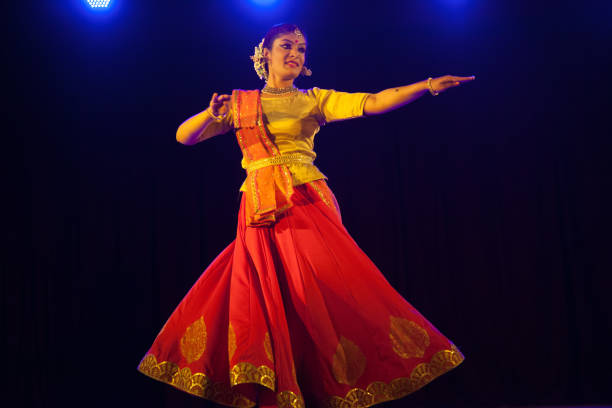

KathakThe Classical Dance of Northern India |
|  |
About Kathak:Kathak is one of the eight classical dance forms of India, originating from the northern regions. Known for its intricate footwork, fast spins, and expressive gestures, Kathak often narrates stories from epics like the Mahabharata and Ramayana. |